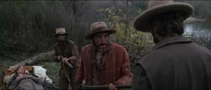

Bob Smith is a man in search of the truth. His favorite quotes are, "We're all fools on this earth, and I can be no different"; "I know it's true, I read it at the LIE-brary"; and "The truth is not misogynistic, it's just the truth".


Today we are going to take a quick look at two epic Clint Eastwood films, one of which is a well-known, Western classic (The Outlaw Josey Wales). The other one is a little-known, under-the-radar gem, which showcases the psychotic insanity of the deranged Western female (Play Misty for Me).
Both of these superb RPO films will leave any red-pill male feeling wholly satisfied, shortly after viewing them, and, well, that’s what these movie reviews of your old Uncle Bob’s are all about, are they not…helping you find the bona fide gold nuggets amid the endlessly steaming piles of SJW Hollywood crap? Yes indeed.
So let’s get crackin’.
Clint Eastwood directed and starred in this sweeping, extremely well-crafted, post-Civil War epic film, and the cinematography and direction are undeniably excellent. But Eastwood’s portrayal of the Southern-sympathizer, Josey Wales, who has a major score to settle after Union troops burn his house down and murder his wife and children, is in itself a major cinematic achievement.
Out for blood and taking no prisoners, Eastwood’s merciless Josey Wales thunders across the plains and prairies of the American West, blowing scores of Northern soldiers away in the process, as he makes a desperate dash towards Mexico, and what he hopes will be sanctuary. But Wales gets sidetracked along the way, collecting a stray dog and a few stray human beings as well, which proves that the only thing a man can truly count on in this life is change.
There’s a great scene early on in the film, involving Josey Wales’ partner in crime, Jaimie (played by Sam Bottoms), where he starts babbling incoherently, while faking a state of fever-induced delirium from underneath a blanket, as the two outlaws are confronted by a pair of backwoods yahoos who are looking to collect the bounty that has recently been placed on Wales’ head.
Here, we clearly see the behavior of the typical, frightened, woefully outmanned beta male, as character actor Len Lesser (who portrays the overmatched bounty hunter Abe) starts yapping and barking in a very loud voice, while jerking around excitedly, shortly after getting the drop on Eastwood’s alpha-male killing-machine.

If you’re an alpha male and you’re in good shape, you’ve undoubtedly seen similar beta-male behavior. Probably at a bar, when some paunchy beta asswit, who’s sitting with his cucked crew, has had one too many beers and starts cutting you down in a passive-aggressive manner, from your periphery, as he barks and yaps in an excited voice about how tough he used to be, or how he doesn’t need to lift weights to be a man, or how he doesn’t think it’s cool to wear tight shorts (a hostile barb born of envy, uttered because he feels his package is inadequate). Yup, you know the routine.
In the film’s wow-we-almost-had-a-gangbang scene, featuring a somewhat-turned-on Sondra Locke (see above photo; Locke portrays Kansas-born settler, Laura Lee), as she’s confronted in the back of a covered wagon and dragged outside by a group of lusty Comancheros, which was obviously a blatant exaggeration, because, as we already know, all rapes are committed by totally unattractive, deranged, horribly evil, light-skinned men who smell badly and have absolutely zero neck tattoos—“Ewwwww,” etc.—Clint’s character comes riding to the rescue out of the hills and guns the would-be rapists down, which probably made SJWs and feminists at the time scream with unbridled outrage at the theater screen, “She was giving her consent! Didn’t you see it? It was in her eyes! It’s her right to express herself sexually, with however many men she might choose! Murderer! Creeper! Pussy-blocker!”
Unfortunately, just like today, there were feminists and SJWs aplenty back in 1976. Their numbers have been growing with a vengeance since roughly the mid-1960s, and after more than 50 years in the saddle, they still keep going round and round in circles, yelling preprogrammed buzzwords and catch-phrases, while unknowingly speeding up the destruction of freedom of speech, but hey, Uncle Bob, tell us something we don’t already know, and yeah, I’ll get back to the film review now.
My favorite scene in the movie occurs when Josey Wales (who, now that I think about it, is a bit of a white knight, hmm…), rescues a Native American woman who is about to be double-teamed against her will by a pair of drunken white trappers.
Eastwood’s mad-dog character ultimately gets the drop on the would-be bounty-collectors, and he blows them straight to hell in an impressive hail of gunfire, which, I’ll have to admit, is pretty darned cool in itself. I mean, that’s why we watch films like this, isn’t it – for the violence, and the babes, and the red-pill messages? Well, there are plenty of those to be had in this no-holds-barred, epic Western film.
Maybe I’m going to have to rethink this movie in terms of it being perceived as a wholly red-pill film. Clint’s character stepped up and stopped a potential gangbang, as well as a three-way, and nobody asked him to do it. So this might have been a sly, Hollywood warm-up for the series of blatant white knight films we see today, but I don’t really want to think that way about Clint, so I won’t. I’ll just gulp down a quick blue pill right now—ah, much better.
I mean, Clint played Dirty Harry Callahan, for chrissakes, in a film that I will hopefully be reviewing at a later date, if I don’t get hit by a truck driven by an illegal alien who’s sporting 20 arrests for murder while having no driver’s license; or lynched by a swarm of rabid SJWs who are on the hunt for any white male who isn’t a media CEO or a billionaire.
The film bogs down a bit after about the two-thirds mark, in my opinion, but it still gets high marks across the board in every other critical category. If you haven’t seen it, rectify that soon. You can’t miss by watching this top-drawer, RPO film for men.
Unless they are over-the-top, laughingly ridiculous, obviously fictional slasher films, red-pill movies like this one just don’t get made in Hollywood any longer.
When you think of Clint Eastwood, you usually think of Dirty Harry, or The Outlaw Josey Wales, or Unforgiven, or Gran Torino, but Clint made a few obscure films that were both solidly red pill, and truly excellent movies, although they’ve been swept under the rug and locked away in the film vaults by today’s liberal-leaning film-hiders.
In this well-directed, highly suspenseful thriller, Carmel-by-the-sea disk jockey, Dave Carver (Clint Eastwood) lives a freewheeling, alpha male lifestyle, regularly banging out an assortment of hot women who listen to his live jazz broadcasts on a nightly basis. Carver is living the dream, pounding most of the available hot babes, and thoroughly enjoying his rightfully appointed alpha male privilege (or is that white male privilege?…er…SJW moment there, sorry).
That is, until Jessica Walter’s psycho-stalker character, Evelyn, walks into his life.
Now, you may have encountered a few of these yourself. Or maybe it’s just me. Sometimes I think I have an invisible sign on my forehead that only the initiated can read, which proclaims, “If you’re hot and insane—I’m your guy.” But Clint Eastwood shows us exactly what it’s like to be pursed by an attractive, psycho, female stalker. From writing creepy notes to him in lipstick on his mirror, to cutting up his clothing, to attacking his cleaning lady in a fit of jealous rage, Clint’s disk-jockey character quickly begins to realize that he bit off a hell of a lot more than just pussy when he started banging actress Jessica Walter’s batshit-crazy Evelyn.
I’ve always had a feeling that actresses who were really good in these psycho roles, were just being themselves. But I could be wrong about that. (I was wrong once before—it was in the third grade and she didn’t really love me.) Be that as it may, Jessica Walters really brings her A-game in the role of the totally unhinged Evelyn. If you’ve ever had a relationship with a woman like this one, watching the film will send chills down your spine, and result in some serious flashback imagery.
(Have you ever done this—what Clint is doing in the above photo—namely, hold and comfort a crazy woman who somehow managed to weasel her way into your life, by skillfully turning you into both an enabler and a caretaker…if so, I definitely feel your pain. And I’ll bet Clint has experienced it a time or three himself, or he probably wouldn’t have done this film.)
Play Misty for Me is absolutely worth watching for myriad reasons; but the most important reason of all, I wholeheartedly believe, is because it will clearly demonstrate to you, in no uncertain terms, the subtle and overt signs that a man absolutely has to be able to recognize, in order to avoid being blindsided by a psychotic, unhinged female. And for that reason alone, it’s a must-see classic, no doubt about it; when Clint’s character ultimately gets revenge on his tormentor, at the very end of this excellent RPO film, you’ll feel all warm and fuzzy inside, too—and in a weird, viscerally satisfying way—which makes the whole experience just that much more gratifying.
By boycotting all modern SJW Hollywood cinema, you are sending a message to the power structure that is loud and clear—you are not being fooled by their deliberate attempts to poison people’s minds and socially engineer them to be pussified, dumbed-down, blue-pill-sucking robots.
Always research the plot lines of any films for which you are seriously considering buying a ticket, or renting on DVD. And if you smell an SJW rat, don’t spend your money. It’s that simple. In the end, it’s just like investigating a potential LTR candidate. You have to conduct your due diligence. Otherwise, you might just get taken for a ride.
Read Next: 10 Hollywood Films For Men That Leave Today’s SJW Movies In The Dust